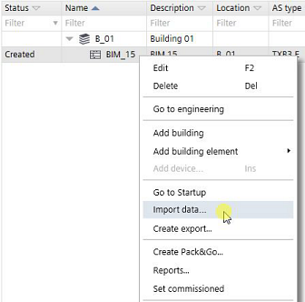

导入模块和 I/Os（仅适用于 TXB3.M）
而不是在中创建模块和 I/OsI/O configuration任务中，您还可以通过 xml 文件导入数据。在第二步中，您可以编辑 TX-I/O 模块的数据点属性。
Exporting modules and I/Os (for TXB3.M only)
Basic rules for importing xml files

Import modules and I/Os
- You have added a bus interface module.
Adding devices
- Go to Building > Building structure.
- Right-click a bus interface module and select Import data.
- Select a file to import.
- You have imported am xml file. You can edit the data point properties in Engineering > I/O configuration.
I/O configuration

如果总线接口模块已在I/O configuration任务，关闭并再次打开它以刷新设备中的导入数据。